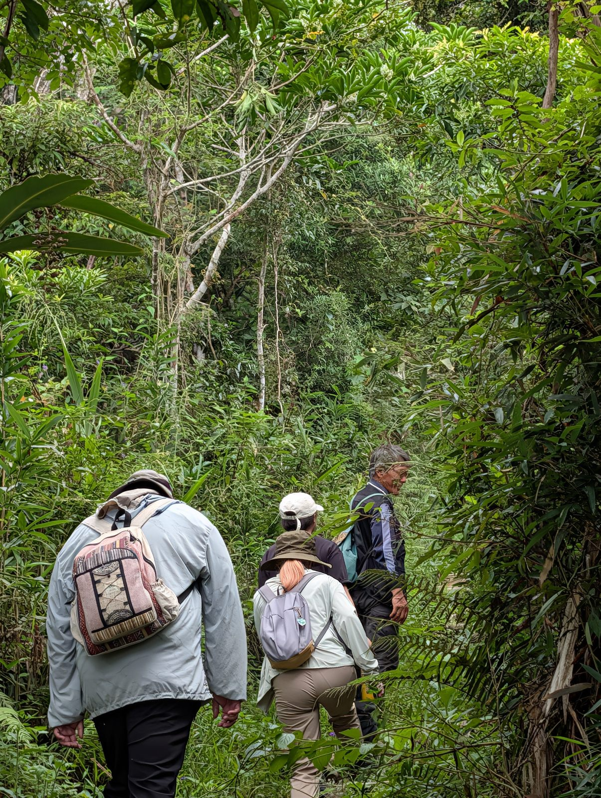
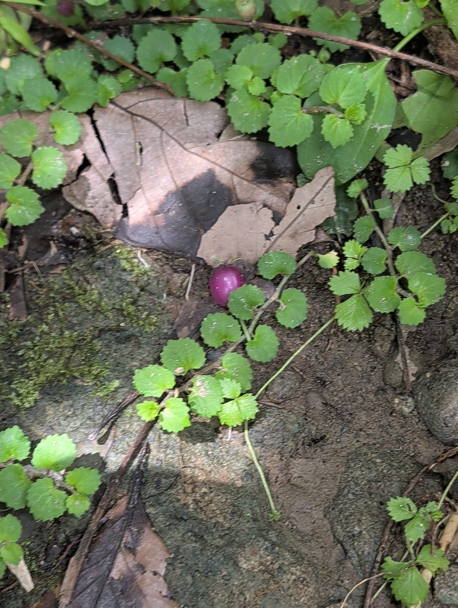
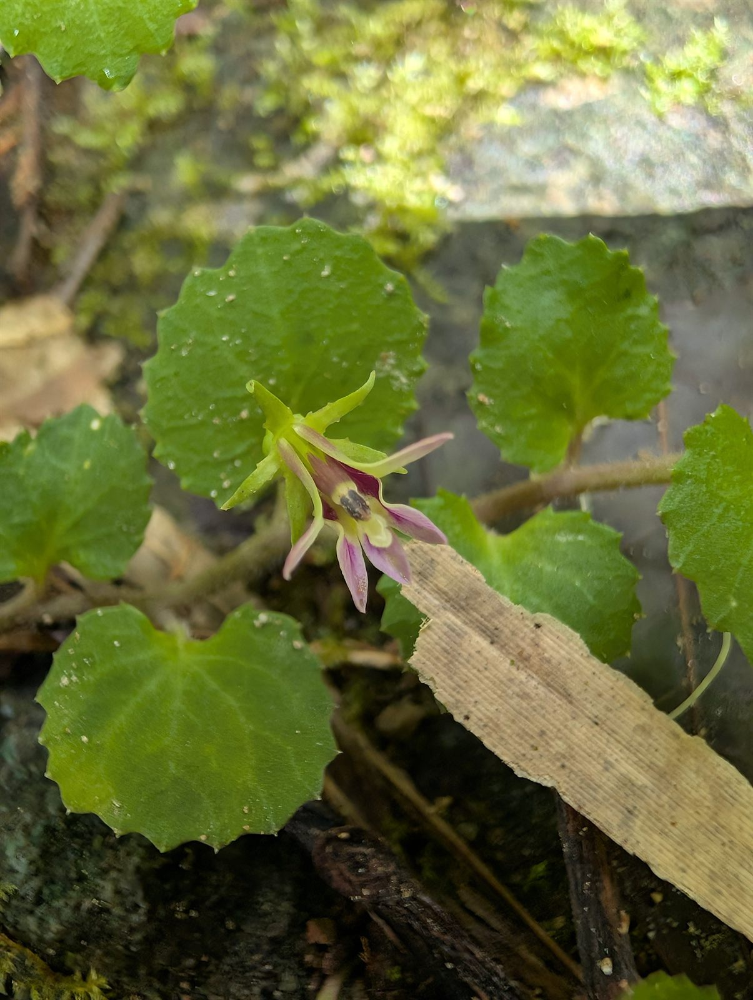
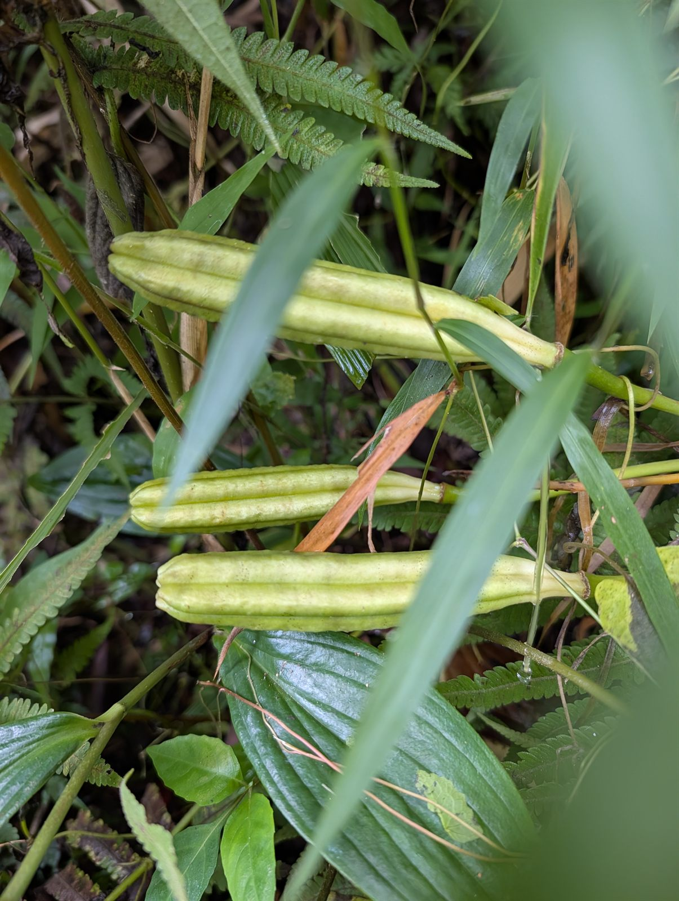
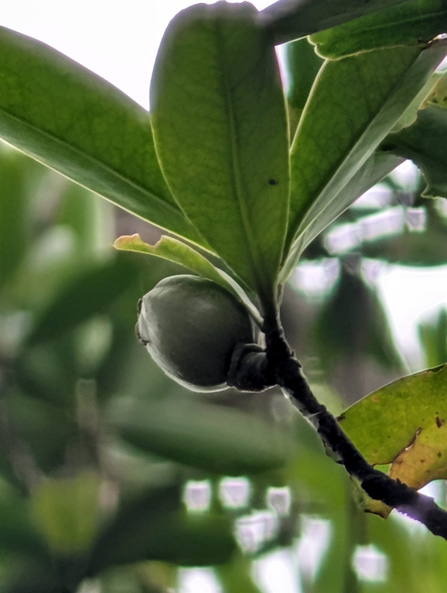
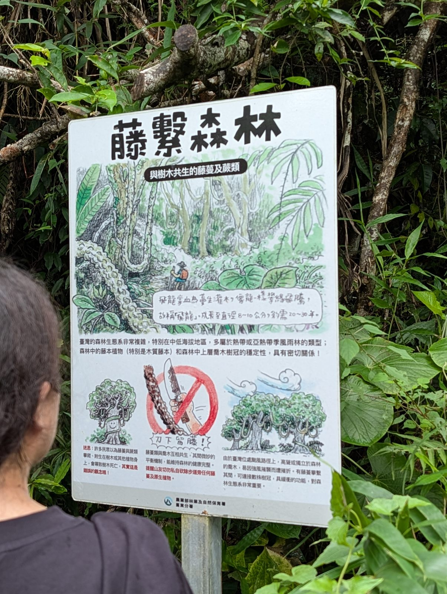
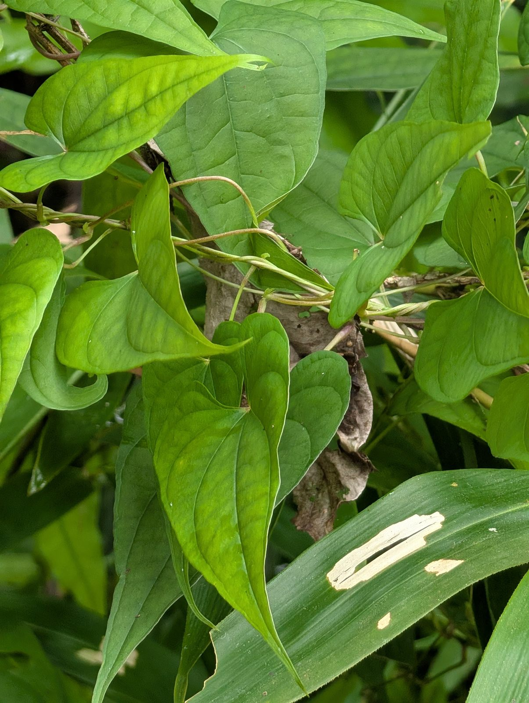
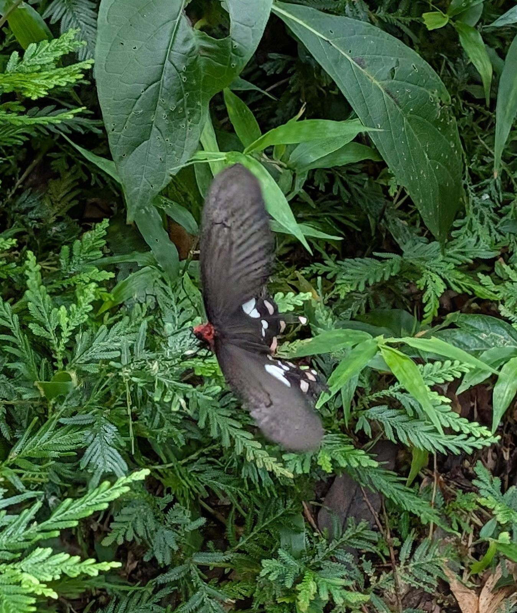
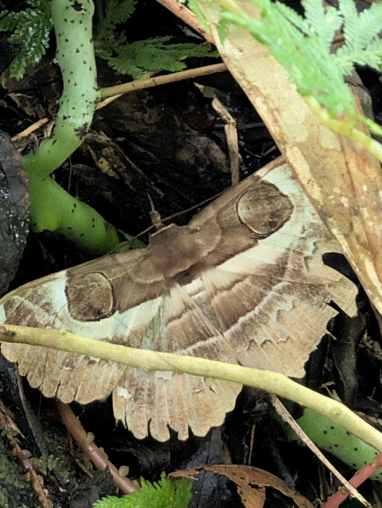
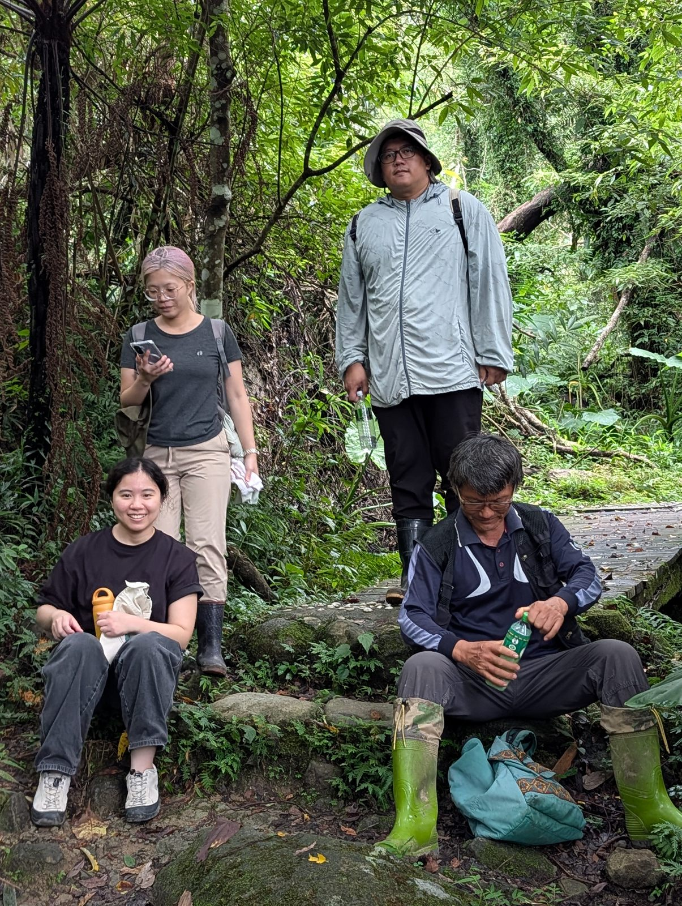

生物世界裡，每種生物都活在自己的生命節律裡——桂花不會想著開玫瑰花，牠們專注做好自己。我們走進森林，也是學習把心慢下來，看清土地真正要告訴我們的話。」
【前言】同一個山頭，不同的眼睛
走進九月的都蘭山，空氣裡已經悄悄褪去了盛夏酷熱的焦躁，轉而沉澱為一縷濕潤而清爽的初秋微涼。
「都蘭山定點觀察」的意義，從來不是急著攻頂或收集三角點，而是每個月挑選同一天、走同一條山徑，用身體和五感去感受山林的流轉。
八月盛夏我們看見的白蕈菇與活潑天牛已經悄悄隱退，取而代之的是初秋果實的豐碩與深邃的共生默契。這一天，我們緊隨著施炳霖老師的腳步，踏上了這座被阿美族與卑南族世代尊崇為聖山的蒼翠山巒。
一、 宏觀地理：北回歸線上的綠色奇蹟與活水庫
步道緩緩上升，身旁的樹蔭逐漸籠罩，擋去了晨光的直射。施老師聊起了台灣這座島嶼在地球生態系中不可思議的得天獨厚：
在全球的地理圖景中，北回歸線穿過的板塊大部分是乾燥的沙漠與荒原，例如墨西哥荒漠、撒哈拉沙漠與阿拉伯半島。然而台灣卻是一座漂浮在太平洋上的「綠色翡翠」，原因正是中央山脈兩百多座超過三千公尺的巨峰，以及橫亙在東海岸一千多公尺的都蘭山。
終年奔騰於東部海域的黑潮暖流，帶來豐沛的蒸騰水氣；當東北季風夾帶海風撞擊到都蘭山高聳的山嶺，雲霧繚繞，化作滋養萬物的水滴。
💧 天然巨型活水庫的運作哲學
這片鬱鬱蔥蔥的森林，正是台東最天然的「綠色巨型水庫」。都蘭溪的源頭在此孕育，雨水穿過層層樹冠、浸潤苔蘚厚毯、滲入落葉腐植土層，再徐徐釋放。
即便入夏前曾經乾旱數月，但只要秋初這兩場甘霖一落，林下的過貓（蹄蓋蕨）與各種草木便能以驚人的韌性在一夜之間舒展復甦。

二、 微觀林下：初秋的結果期與地表小珍寶
秋天，是多數中低海拔植物結果封收的時節。我們放慢了腳步，眼睛開始習慣在深淺不一的綠色漸層中尋找細微的生命動靜。
一低頭，在鋪滿腐葉的步道邊緣，大家驚呼了一聲。只見匍匐於岩面與泥土的低矮藤蔓間，結著一顆晶瑩如紫色寶石般的小漿果——那是普刺特草（又名地茄子、銅錘玉帶草，Lobelia nummularia）。它那帶有微細鋸齒的小圓葉在陰濕地表鋪展，鮮艷多汁的紫紅果實讓人忍不住屏息細看。


不遠處，我們又在石縫草叢中找到了它正值花期的精緻小花。普刺特草的花瓣極具特色，呈現單側開裂的淡紫色管狀羽扇，宛如林間精靈張開的微小翅膀。花與果同時出現在同一個初秋的山頭，具象地演繹著生命的接力與循環。
林徑兩側還能看見昂然直立的台灣百合（Lilium formosanum）。夏季盛開的白花早已功成身退，如今枝頂挺立著三個飽滿修長的綠色蒴果，像三支直指天際的綠色號角，等待著晚秋乾枯開裂後，讓數以百計帶薄翅的種子乘著山風飛向遠方。


身旁的枝頭間，台灣山桂花的青澀幼果結在葉腋，火炭母草攀附在灌木上向陽生長，還有揉碎後散發特有辛香微辣與微鹹風味的台灣胡椒（風藤）。施老師笑著讓大家辨識氣味，大自然在不同植物裡合成的微量元素與芳香分子，是山林最深邃的調味盤。
三、 深度思辨：藤繫森林，「刀下留藤」的共生之網
走過一處向陽轉角，一面林務局的解說牌吸引了大家的目光——「藤繫森林：與樹木共生的藤蔓及蕨類」。

施老師停下腳步，指著纏繞在巨木樹幹上的木質藤本（如飛龍掌血、菊花木）與緊貼樹皮向上爬行的拎壁龍（Psychotria serpens），為大家上了一堂極具啟發性的植物生理學課：
一般登山客常有「藤蔓會把大樹絞死」的刻板迷思，甚至習慣帶著開山刀隨意砍斷粗壯的樹藤。但施老師從科學與演化視角剖析了深層真相：
🌲 關鍵一：樹幹增粗的生理機制與木栓層
樹幹的木質部在內、韌皮部在外，中間是分裂活躍的「形成層」。最外層的樹皮木栓層其實是老死組織，會隨著樹徑變粗而自然乾裂脫皮。
像拎壁龍這樣的附生爬藤，靠著不定氣生根牢牢抓附在樹皮外表層，並不會破壞深層的輸導組織，更不會讓大樹「窒息」。
🌀 關鍵二：狂風中的「抗颱連通張力網絡」
台灣東海岸是西太平洋颱風首當其衝的登陸走廊。巨大的木質藤蔓在林冠層之間相互穿梭纏繞，把各自獨立的高大喬木在空中「編織」成一座連通的張力網。
當 17 級強烈颱風掠過，暴風受力不再由單一孤立的樹幹單獨承受，而是由整片相連的樹冠共同分散緩衝！藤蔓不是樹的絞殺者，而是暴風雨中與巨木並肩攜手的患難盟友。

看著那盤旋蜿蜒直上雲端的藤條，我們由衷體會到大自然的深邃設計：沒有誰是誰的累贅，林冠下的每一場攀爬，都是生命為了共存而譜寫的默契。
四、 林間精靈：驚鴻一瞥的翩飛與擬態大師
步道行經溪谷水源邊，陽光透過樹冠的孔隙灑在蕨類上，形成斑駁的光斑。
突然，一道黑色的光影在綠葉間翩翩起舞——那是一隻美麗的麝香鳳蝶。牠黑褐色的翅面上點綴著醒目的粉白斑點，腹部與胸側隱現著鮮紅的絨毛。當牠輕盈地停棲在翠綠的蕨葉上振翅時，那份優雅與輕靈，瞬間點亮了幽深的森林。

而在更不起眼的腐木落葉堆旁，夥伴差點一腳踩過的地方，施老師眼尖地叫住了大家。
仔細一看，那片看似平平無奇的枯黃落葉，竟然是一隻體型碩大的魔目夜蛾！牠雙翅平展，翅膀邊緣有著如同破枯葉般的波浪紋理，最令人讚嘆的是翅面中央一對栩栩如生的巨大「眼斑」擬態，宛如貓頭鷹炯炯有神的雙眼，威懾著可能靠近的天敵。若非屏息凝視，根本無法分辨牠究竟是一片落葉，還是一個活生生的呼吸體。

五、 海拔七百米的大石：共享清泉與茶香
步道走到約海拔 700 多公尺處，經過一座小巧古樸的木棧道與潺潺山澗。這裡的氣候格外沁涼，山風徐來，完全感受不到平地近三十度的高溫。
施老師找了一處平坦的大岩石坐下，笑著招呼大家歇息。

大家卸下行囊，有人擰開水壺，施老師扭開隨身的無糖冷泡綠茶，夥伴們拿出了乾糧、水果與零食在石面上擺開。
在都蘭山定點觀察的這條路上，「在石頭上共享」已經成為我們最珍視的一道儀式。四周是高聳的筆筒樹、攀附的薜荔、蒼鬱的殼斗科老樹；耳畔是細碎的水流聲與鳥鳴。大家一邊吃著點心，一邊回味剛剛看見的花草蟲鳥，聊著生活、聊著社區食物森林的推動、聊著 AI 工具如何幫助我們整理山林筆記。
生命的步調在這裡回歸到最純粹的頻率。不需要趕路，不需要設定什麼高大上的目標，只要像一棵樹一樣，穩穩地站在這裡呼吸。
【結語】定點觀察：練習帶著意識與土地連結
下山的路上，山嵐漸漸升起，都蘭山再次籠罩在一層朦朧神秘的霧幔之中。
從八月到九月，同一個木棧道、同一個岩石區，上個月看見的天牛與白蕈菇退場了，取而代之的是初秋的紫果、百合果莢、翩飛的鳳蝶與落葉中的夜蛾。
每個月走一次都蘭山，不是為了征服山，而是讓山一次又一次地洗滌我們。期待十月的都蘭山，又會為願意慢下來的我們，準備什麼樣的驚喜。
📌 本次觀察物種速查圖鑑
普刺特草
匍匐低矮草本，莖蔓延貼地。本次同時觀察到晶瑩飽滿的紫紅色熟果，以及單側裂開如羽扇的淡紫白色精緻花朵，花果交織於初秋地表。
台灣百合（蒴果）
台灣特有種植物。盛夏白花功成身退，此時枝頂昂然挺立三個飽滿圓柱形成熟蒴果，如三支號角蓄勢待發，內含無數帶薄翅的種子。
麝香鳳蝶
大型鳳蝶，翅面黑褐色帶有顯著粉白月牙斑紋，胸側與腹部覆蓋鮮艷朱紅色長絨毛。性情優雅輕盈，於林蔭光隙間悠遊穿梭。
魔目夜蛾
大型夜蛾，雙翅平展波浪鋸齒緣，完美模擬枯焦落葉紋理。中央一對深邃逼真的巨大圓形眼斑，宛如貓頭鷹雙目威嚇天敵，偽裝技藝巧奪天工。
台灣山桂花
常綠灌木，葉互生具疏鋸齒。枝頭腋生之青翠圓球形小幼果正逐漸蓄積能量，為鳥類秋冬季不可或缺的林下糧倉。
拎壁龍（白珠藤）
攀緣木質藤本，以發達的不定氣生根緊貼大樹樹皮向上生長。不傷喬木內部組織，並與林冠木質藤共同構成強韌的「抗颱抗風張力安全網」。
台灣胡椒（風藤）
攀援藤本，葉片揉碎後散發強烈辛香微辣與特有鹹香。為台灣傳統民俗藥用植物，代表著山林深邃純淨的天然芳香分子。
火炭母草
多年生草本，葉面常具顯著的「V」字形黑褐色斑紋。蔓延生長於步道向陽林緣，熟果黑色多汁被宿存肉質花被包被，可食用且生命力頑強。
| 分類 | 物種名稱 | 科別與特徵筆記 | 生態角色與共生意義 |
|---|---|---|---|
| 植物 | 普刺特草 (銅錘玉帶草) | 桔梗科 ‧ 紫紅多汁漿果、淡紫白色單側開裂花朵 | 初秋花果同期，林下陰濕地表優良護地覆被 |
| 植物 | 台灣百合 (蒴果) | 百合科 ‧ 花期已過，枝頂挺立三柱圓柱形蒴果 | 台灣特有種，薄翅種子靜候晚秋山風擴散 |
| 植物 | 拎壁龍 (白珠藤) | 茜草科 ‧ 氣生根附著於樹皮木栓層 | 不傷內部輸導組織，共築樹冠抗颱張力網絡 |
| 植物 | 台灣山桂花 | 報春花科 ‧ 枝頭結青綠圓球形小幼果 | 灌木層代表，秋冬季林間鳥類重要野果糧源 |
| 植物 | 台灣胡椒 (風藤) | 胡椒科 ‧ 揉碎散發特有辛辣微鹹芳香 | 優質民俗芳香藥用植物，低海拔森林指標 |
| 植物 | 火炭母草 | 蓼科 ‧ 葉面具倒V斑紋，熟果黑而甘潤 | 林緣開闊地先驅地被，昆蟲蜜源與野生食草 |
| 昆蟲 | 麝香鳳蝶 | 鳳蝶科 ‧ 黑翅白月斑，胸腹帶朱紅鮮艷絨毛 | 林間授粉者，優雅巡飛於蕨類與水源溪谷 |
| 昆蟲 | 魔目夜蛾 | 裳夜蛾科 ‧ 波浪落葉翅緣，中央大眼斑同心圓 | 頂級擬態偽裝大師，白天安靜棲息腐木落葉堆 |